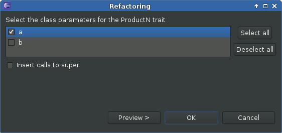

Source generators
Tired of writing hashCode and equals implementations by hand? Now you can let the IDE take care of it! The following source generators can be found under the Source context menu that appears after right-clicking in the editor.
Generate hashCode and equals
Generate hashCode and equals generates implementations for the hashCode and equals methods based on selected class parameters. The implementations are based on the recommendations from Programming in Scala. This includes a canEqual method, thus the Equals trait is mixed in as well.
To start this refactoring simply select a class. As an example we will use the class Generate:
In the refactoring dialog the class parameters that should be included in the equals comparison and the hashcode computation can be selected. Optionally calls to super can be inserted:
Selecting both class parameters and inserting calls to super results in this:
If the original class already has existing implementations for canEqual, equals or hashCode, the refactoring dialog offers the option to keep those or let them be replaced by newly generated implementations:
Introduce ProductN trait
Asked for by the community, Introduce ProductN trait is an extension of Generate hashCode and equals. In addition to Generate hashCode and equals this generator creates the methods _1 to _n for the selected class parameters and mixes in the trait ProductN, where n stands for the number of selected class parameters.
The refactoring dialog is almost the same as for Generate hashCode and equals:
Selecting only the first parameter a and omitting calls to super results in this: